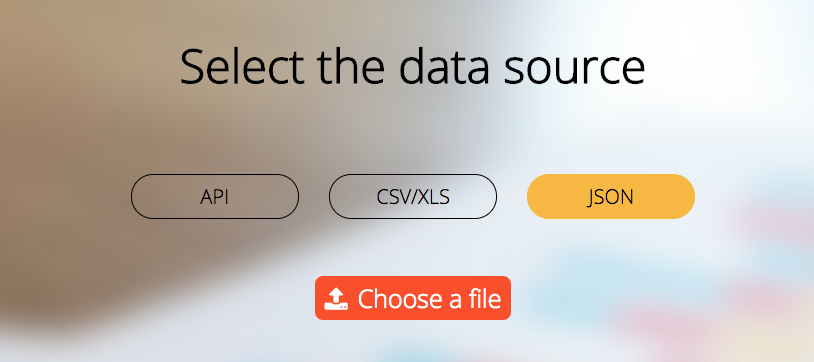

Infographics Web Editor
-
Facultatea de Informatică Iași, Universitatea "Alexandru Ioan Cuza"
Cuprins
1. Descriere
2. Design General
3. Interactiune cu utilizatorul
4. Arhitectura si stocare date
5. Verionare
6. Resurse
7. Ghidul de utilizare al aplicatiei
Descriere
Aplicația Infographics Web Editor este menită să ofere o interfata prietenoasa prin care utilizatorii pot genera si edita diverse grafice.
Aceasta primeste de la utilizator o sursa de date, care poate fi vizualizata in functie de preferintele utilizatorului, iar mai apoi descarcata intr-un format PNG sau SVG.
Utilizatorul va putea efectua diverse modificari asupra fiecarui tip de grafic disponibil.Ii va putea schimba culorile, sau modul in care sunt afisate datele prin reprezentarea acestora.
Design General
Aceasta pagina pune la dispozitia utilizatorului posibilitatea de a selecta tipul de infografic pe care il doreste sa il genereze.
La urmatorul pas, se face selectarea sursei de date. Aceasta poate fi endpointul catre un API sau unploadul unui fisier CSV sau JSON.
Ultimul pas este generarea efectiva a infogramei si editarea acesteia. De aici, acesta poate sa o modifice usor din panelul din dreapta.

Interactiune cu utilizatorul
Maniera de interactiune cu utilizatorul este una cursiva, acesta avand un traseu bine stabilit de urmat pentru a ajunge la rezultatul final.
Butoanele mari si clare dar si designul minimalist fac usor de folosit aplicatia, care incorporeaza diverse functionalitati fara a pune in incurcatura utilizatorul.
Arhitectura si stocare date
Sursa de date selectata de utilizator este incarcata in memorie, pe partea clientului, nefiind nevoie de un upload efectiv catre un server.
Arhitectura aplicatiei este una de tip serverless, aceasta fiind construita ca un SPA (Single Page Aplication). Pentru a afisa diferite sectiuni de continut, site-ul foloseste un mecanism propriu implementat in JavaScript de injectare a continutului fisierelor partiale HTML in interiorul paginii principale(SPA).
Concret, cu fiecare interactiune a utilizatorului cu aplicatia, sunt incarcate in mod dinamic prin AJAX, sectiuni HTML corespunzatoare alegerii facute.
Pentru a stoca diferitele optiuni pe care le alege utilizatorul, folosim un script global ce memoreaza intr-o structura, alegerile facute (similar cu un controller pe partea de back-end). Aceste metadate, sunt cuplate apoi cu fisierul uploadat de utilizator si trimise catre un script incarcat dinamic ce va genera infograficul.
Versionare
Am folosit GitHub pe post de repository al proiectului. Am utilizat Git Bash pentru a rezolva conflictele și pentru a face modicări/adăugări/ștergeri a unui sau a mai multor fișiere din cadrul repository-ului.
Ghidul de utilizare al aplicatiei
Vom explora metoda prin care un user poate sa genereze o harta pe baza datelor furnizate
1. Pe prima pagina utilizatorul este intampinat cu un mesaj de bun venit si apoi este rugat sa continue:

2. Dupa ce apasa pe continue, este rugat sa aleaga categoria infograficului pe care il doreste; noi vom alege maps:

3. Dupa alegerea categoriei harti, utilizatorul este rugat sa introduca regiunea pe care o doreste. Noi vom alege USA. De remarcat interfata minimalista pentru a cautare.
4. Intrucat pe o harta, sursele de date pot fi de mai multe feluri, aplicatia ofera posibilitatea utilizatorului sa specifice ce fel de date uploadeaza.
5. In acest moment, utilizatorul poate selecta una din sursele de date prezentate pentru a genera infograficul, noi vom selecta un csv ce contine populatia Statelor Unite in ficare stat.
6. Utilizatorul poate observa infograficul generat din csv-ul uploadad. Harta contine pe o scara de la galben la verde, cat de populat este un stat american.